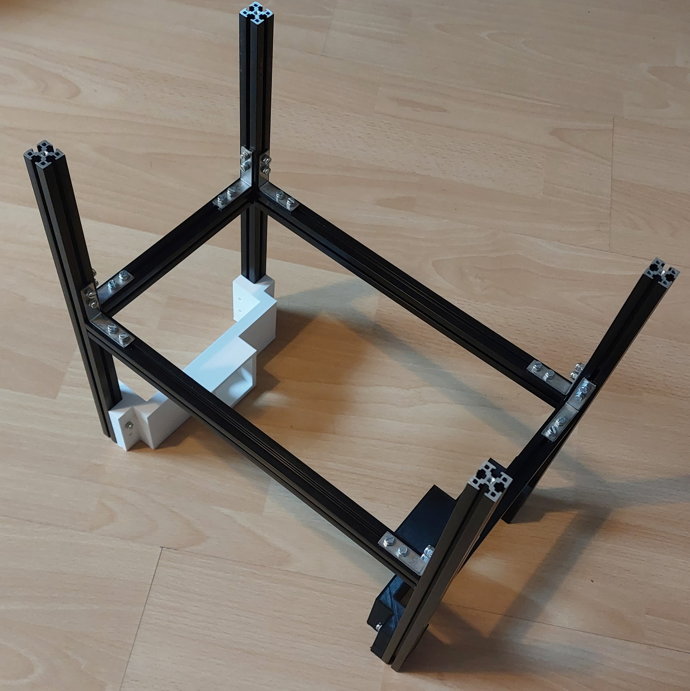
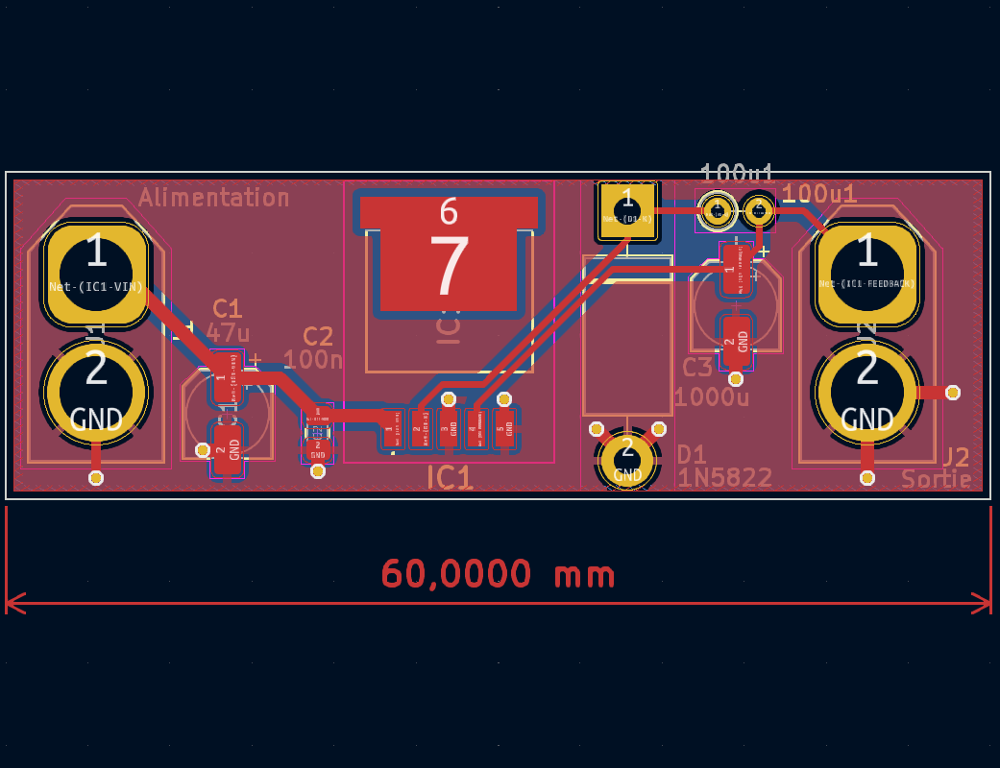
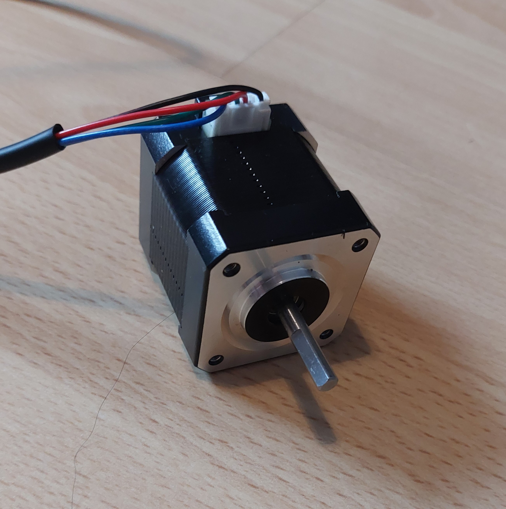
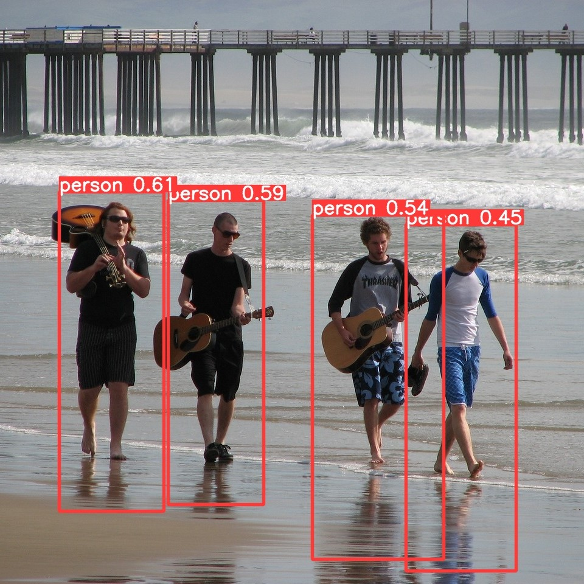
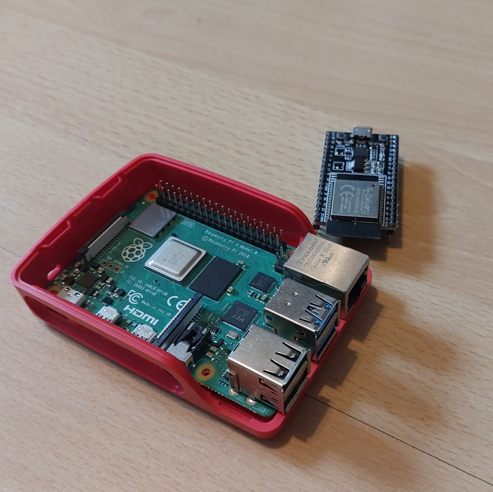
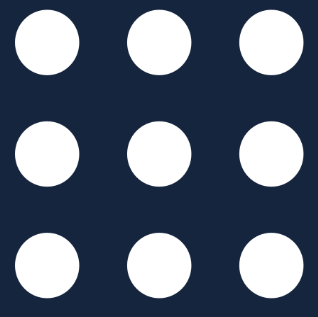

Ishibot
Introduction
 Ishibot is an autonomous mobile platform, designed with the aim of participating to the French Robotics Cup. I am currently developing multiple features for this robot: constructing the robot's frame, training an AI model for object recognition, designing the power and motor control boards. I am also planning to implement a ROS (Robot Operating System) architecture on a Raspberry Pi and integrate additional actuators.
Ishibot is an autonomous mobile platform, designed with the aim of participating to the French Robotics Cup. I am currently developing multiple features for this robot: constructing the robot's frame, training an AI model for object recognition, designing the power and motor control boards. I am also planning to implement a ROS (Robot Operating System) architecture on a Raspberry Pi and integrate additional actuators.
Mechanics

This robot has been modeled using Onshape and it construction is a work in progress. The robot's frame is crafted from metal, using profiled sections, ensuring both solidity and lightness. Complementary components are made from PLA, 3D-printed with a 3D printer, and from wood and PMMA, cut using a laser cutter. Its dimensions must adhere to the conditions stipulated by the regulations of the French Robotics Cup. This construction method allows for great adaptability.
Power Board

The power board plays a crucial role as the intermediary connecting the battery to diverse modules, facilitating the conversion of electrical power sourced from the battery. Presently, the design process is underway using KiCad, an open-source software dedicated to printed circuit board design. Following the validation of the design, a Printed Circuit Board (PCB) will be manufactured. Additionally, a Battery Management System (BMS) will be placed between the battery and the power board to enhance battery protection.
Motor control

The rolling base has been meticulously designed to function as a differential drive system, utilizing only two motors. The chosen motors are NEMA 17 stepper motors, renowned for their precision. These motors will be under the control of TMC2209 stepper motor drivers, with commands relayed through an ESP32. Communication between the ESP32 and the system will be facilitated via Bluetooth. In the initial phase, the motors will operate in an open-loop configuration.
IA - Object Detection

The robot must be able to recognize its environment. One of the proposed solutions involves incorporating a camera and implementing IA to process real-time detection. Currently, I am in the process of training an AI model, YOLOv8, to recognize individuals in royalty-free images. This initial training phase serves as a foundation to familiarize the model with the process, paving the way to teach it to detect a broader range of objects. The plan is to deploy this AI on a Raspberry Pi for operational efficiency.
Micro Controller

The robot will ultimately be equipped with a Raspberry Pi and multiple ESP32. Initially, it will be outfitted only with ESP32 to handle trajectory planning, motor control, and potential sensors. Currently, I am in the process of implementing FreeRTOS on the ESP32 devices. The Raspberry Pi will be introduced later to integrate artificial intelligence (AI) and a Robot Operating System (ROS) architecture.
ROS (Robot Operating System)

ROS is an open-source middleware framework providing communication and control tools for building robotic systems. I plan to integrate a ROS architecture into this project once the other modules are completed or at least well advanced. Currently, I have installed ROS on a Raspberry Pi, which I control via SSH, and I have acquired the fundamentals of this middleware. Additionally, I would like to add a LiDAR sensor. I will resume its development at a later stage.
Actuator
The robot will require actuators to interact with the environment. The design of the robot has been conceived to be completely modular, enabling the flexibility to interchange actuators at will. The creation of these actuators will be the final stage of the robot's design process.